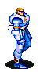

<!DOCTYPE html>
<html>
<meta charset="UTF-8">
<meta name="viewport" content="width=device-width, initial-scale=1">
<title>User Interactions - Draw tool to draw geometries</title>
<style type="text/css">
    html,
    body {
        margin: 0px;
        height: 100%;
        width: 100%
    }

    .container {
        width: 100%;
        height: 100%
    }
</style>
<link rel='stylesheet' href='https://cdn.jsdelivr.net/npm/maptalks/dist/maptalks.min.css' />

<script type='text/javascript' src='https://cdn.jsdelivr.net/npm/maptalks-gl/dist/maptalks-gl.min.js'></script>
<script type='text/javascript' src='./../assets/lib/supercluster.js'></script>
<style>
    .marker-cluster-small {
        background-color: rgba(181, 226, 140, 1);
    }

    .marker-cluster-small div {
        background-color: rgba(110, 204, 57, 1);
    }

    .marker-cluster-medium {
        background-color: rgba(241, 211, 87, 1);
        animation: highlightpoint 2s infinite;
    }

    .marker-cluster-medium div {
        background-color: rgba(240, 194, 12, 1);
    }

    .marker-cluster-large {
        background-color: rgba(253, 156, 115, 1);
    }

    .marker-cluster-large div {
        background-color: rgba(241, 128, 23, 1);
    }

    .marker-cluster {
        background-clip: padding-box;
        border-radius: 20px;
    }

    .marker-cluster div {
        width: 30px;
        height: 30px;
        margin-left: 5px;
        margin-top: 5px;

        text-align: center;
        border-radius: 15px;
        font: 12px "Helvetica Neue", Arial, Helvetica, sans-serif;
    }

    .marker-cluster span {
        line-height: 30px;
    }

    .marker-cluster {
        width: 40px;
        height: 40px;
        text-align: center;
        line-height: 40px;
        font-size: 12px;
        cursor: pointer;
    }

    @keyframes highlightpoint {
        0% {
            transform: scale(1);
            opacity: .9
        }

        100% {
            transform: scale(1.5);
            opacity: 0.1;
        }
    }
</style>

<body>

    <div id="map" class="container"></div>

    <script>

        const { Eventable, Class } = maptalks;

        const OPTIONS = {
            radius: 250,
            maxZoom: 18
        }

        function now() {
            return new Date().getTime();
        }

        class MarkerClusterLayer extends Eventable(Class) {
            constructor(options) {
                super(options);
                this.data = null;
                this.map = null;
                if (!options.createIcon) {
                    console.error('not find createIcon params for create uimarker');
                    return this;
                }
                const index = new Supercluster(Object.assign({}, OPTIONS, options));
                this.index = index;
                this.clusterCache = {};
                this.time = now();
            }

            getMap() {
                return this.map;
            }

            getMarkers() {
                return Object.values(this.clusterCache);
            }

            getIndex() {
                return this.index;
            }

            addTo(map) {
                if (this.getMap()) {
                    console.error('it has added to map');
                    return this;
                }
                this.map = map;
                this.map.on('viewchange', this._viewchange, this);
                this._cluster();
                return this;
            }

            remove() {
                this.map.on('viewchange', this._viewchange, this);
                this.map = null;
                return this;
            }

            _viewchange() {
                this._cluster();

            }

            _cluster() {
                const map = this.getMap();
                if (!map) {
                    return this;
                }
                if (!this.data || this.data.length === 0 || !this.options.createIcon) {
                    return this;
                }
                const bound = map.getExtent();
                const { xmin, ymin, xmax, ymax } = bound;
                const zoom = Math.round(map.getZoom());
                const result = this.index.getClusters([xmin, ymin, xmax, ymax], zoom);
                const tempCache = {};
                result.forEach(feature => {
                    const { id } = feature;
                    tempCache[id] = feature;
                });
                for (const key in this.clusterCache) {
                    if (!tempCache[key]) {
                        const marker = this.clusterCache[key];
                        marker.remove();
                        delete marker.feature;
                        delete this.clusterCache[key];
                    }
                }

                // const time = 'time';
                // console.time(time);
                for (const key in tempCache) {
                    if (this.clusterCache[key]) {
                        continue;
                    }
                    const feature = tempCache[key];
                    const marker = this.options.createIcon(feature);
                    if (!marker) {
                        continue;
                    }
                    marker.addTo(map);
                    marker.feature = tempCache[key];
                    this.clusterCache[key] = marker;
                }
                // console.timeEnd(time);
                return this;

            }

            _checkData(geojson) {
                let features;
                if (geojson.type === 'FeatureCollection') {
                    features = geojson.features || [];
                } else if (Array.isArray(geojson)) {
                    features = geojson;
                }
                if (!features) {
                    console.error('geojson data is error', geojson);
                    return this;
                }
                features.forEach(feature => {
                    feature.id = feature.id || `f-${maptalks.Util.GUID()}`;
                });
                this.index.load(features);
                this.data = geojson;
                return this;

            }

            setData(geojson) {
                this._checkData(geojson);
                this._cluster();
                return this;
            }

            clear() {
                this.data = [];
                this.getMarkers().forEach(marker => {
                    marker.remove();
                });
                this.clusterCache = {};
                this._cluster();
                return this;
            }

        }

        MarkerClusterLayer.mergeOptions(OPTIONS);


        var map = new maptalks.Map('map', {
            center: [121.52413252, 31.14154476],
            zoom: 11,
            pitch: 0,
            zoomControl: true,
            baseLayer: new maptalks.TileLayer('base', {
                urlTemplate: "https://webst01.is.autonavi.com/appmaptile?style=6&x={x}&y={y}&z={z}",
                subdomains: ["a", "b", "c", "d"],
                maxAvailableZoom: 18,
            })
        });


        const markerClick = (e) => {
            console.log(e.target);
        };

        const createIcon = (feature) => {
            const cluster = feature.properties.cluster;
            const coordinate = feature.geometry.coordinates;
            let marker;
            if (!cluster) {
                marker = new maptalks.ui.UIMarker(coordinate, {
                    content: ''
                });
            } else {
                const count = feature.properties.point_count;
                const id = feature.id;
                const index = markerClusterLayer.getIndex();
                //https://github.com/mapbox/supercluster
                const features = index.getLeaves(id, 10);
                // console.log(features);
                const size =
                    count < 100 ? 'small' :
                        count < 1000 ? 'medium' : 'large';
                marker = new maptalks.ui.UIMarker(coordinate, {
                    content: `<div class="marker-cluster marker-cluster-${size}">${count}</div>`
                });
            }
            marker.on('click', markerClick);
            return marker;


        }

        const markerClusterLayer = new MarkerClusterLayer({ createIcon });
        markerClusterLayer.addTo(map);

        fetch('./../assets/data/pois.geojson').then(res => res.json()).then(geojson => {
            markerClusterLayer.setData(geojson);
        })


    </script>
</body>

</html>